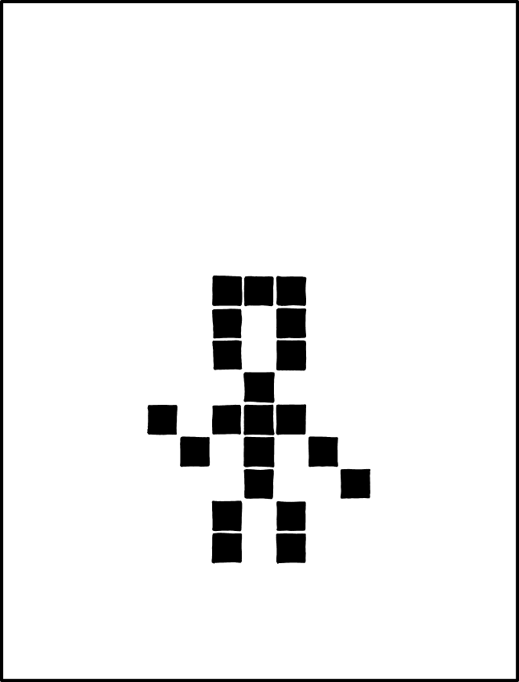

Project 1: Conway's Game of Life, in RGB! (Part A due 9/16, Part B due 9/19)
Project by Dan Garcia, Justin Yokota, Nikhil Pimpalkhare, and Ryan Thornton
Background

RIP John Conway (from xkcd)
John Horton Conway, one of the world’s greatest mathematicians, passed away this year due to the coronavirus. One of his many contributions was the famous Game of Life, which you will explore and ultimately implement in this project. Before we begin with that, we first need to introduce a few concepts.
Getting Started
Please follow the directions here to get a repository: https://docs.google.com/forms/d/e/1FAIpQLSc_DG6SfY-g9cFDkss7YNj9WoG-CKLMfk3wBCaStm-C8HRmJw/viewform
Then, clone your repository locally and add the starter remote
$ git clone https://github.com/61c-student/fa20-proj1-GITHUB_USERNAME.git
$ cd fa20-proj1-GITHUB_USERNAME
$ git remote add starter https://github.com/61c-teach/fa20-proj1-starter.git
If you ever want to pull updated starter code, you’d execute the following command:
$ git pull starter master
PPM Format
In this project, we’ll be working with PPM ASCII files (type P3) with maximum value 255, a simple format for storing images. To understand the PPM format, let’s take a look at an example:
P3
4 5
255
0 0 0 0 0 0 0 0 0 0 0 0
255 255 255 255 255 255 255 255 255 0 0 0
0 0 0 0 0 0 0 0 0 0 0 0
0 0 0 0 0 0 0 0 0 0 0 0
0 0 0 0 0 0 0 0 0 0 0 0
The first line of the header, “P3”, tells us that this is a PPM file of format P3 (there happen to be 5 other formats).
The second line tells us the width and the height of our image. In this case, our image is 4 pixels wide and 5 pixels tall.
The final line of the header, “255”, gives us the scale with which we are describing colors. In this case, color values will range from 0 to 255.
The rest of the file describes the actual pixels in the image - each pixel is described by three numbers, representing the red, green, and blue values in that pixel. The content in the body of the file confirms the information in the header: since each pixel needs 3 numbers, we have 4 pixels per row and 5 rows.
The command convert will be very useful for file manipulations to convert between .ppm format and more standard formats. convert is preinstalled on the hives, and can change between file formats.
The command convert -compress none glider.png glider.ppm can convert a png to a PPM P3 format, albeit with a different spacing convention than the one we will be using in this project. Similarly, the command convert glider.ppm glider.png can be used to convert a ppm back to a png. This can be useful for debugging purposes, and seeing the actual image files.
File I/O
In this project, you will need to read in PPM files and convert them to a form that you can use to accomplish the various tasks you are given. To help you get started, we have provided some useful struct definitions in imageloader.h:
typedef struct Color
{
uint8_t R;
uint8_t G;
uint8_t B;
} Color;
typedef struct Image
{
Color **image;
uint32_t rows;
uint32_t cols;
} Image;
Each pixel in a given PPM file should be stored as a Color, and each overall image should be stored as an Image. The attributes (R, G, B) for Color should respectively be the red, green, and blue values for the stored pixel. For Image, the rows and cols attributes should store the dimensions of the image. The image attribute should be a list of Color*, where each Color* stores the color of a single pixel. You are free to choose any implementation that fits this, but we recommend storing pixels in row-major order. In row-major order, we store pixels in “reading order”, from top to bottom, left to right. This is effectively the same order that pixels are written in a .ppm file, so this will greatly simplify your code.
For file I/O, we recommend using fopen and fclose for file management and fscanf for actually reading data from the file. Here is an annotated example of using these three functions:
// fopen opens a file pointer to the "diary.txt" file.
// The "r" indicates that the file should be opened in "read mode".
// Other modes are detailed in the documentation linked above.
FILE *fp = fopen("diary.txt", "r");
// fscanf reads the first word and first number from the given file pointer into buf and num, respectively.
// The second argument is a string format, specifying what exactly fscanf should be reading from the file pointer.
// More options can for the string format can be found in the documentation linked above,
// but you may need to Google to figure out how to scan in specific types.
char buf[20];
int num;
fscanf(fp, "%s %d", buf, &num);
// fclose simply closes the file pointer after we're done with it.
// This frees the memory that fopen allocated for the file.
// This is also a necessary step whenever we are writing to a file:
// without closing the pointer, you may lose the last few lines
// you want to write.
fclose(fp);
Part A1
In imageloader.c, write the functions readData, writeData, and freeImage, which will be used to convert between the Image struct and .ppm files. readData should read an Image struct from a .ppm file, writeData should write an Image struct in its PPM format to standard output, and freeImage should free an Image object.
We have included all needed libraries; for this project, you may not add additional include statements.
We have provided a sanity test for this part in imageloadertester.c.
Running make imageloader will compile imageloader and run the test.
make imagememcheck will run a check on memory leaks.
Output Correctness
In order for your project to be autograded properly, it must follow these output guidelines:
- The first lines in each of the output files MUST follow this format:
P3 [cols] [rows] 255…where [cols] is the number of cols, and [rows] is the number of rows.
-
The remainder of the file is your image data, which have to follow the following rules.
- Each of the R, G and B values should be formatted to have 3 characters, with a space between them.
- There should be three spaces between columns.
- Do not have any extraneous whitespace characters at the end of the row.
- All rows end with a newline character.
- After your program exits, the UNIX prompt should start on a new line and not on the same line (There should be a new line at the end of your file).
- You may assume for our autograder tests that the input file follows this exact format; however, note that some of our examples in testInputs and most converters will have different amounts of whitespace between pixels and the end of lines. If you use fscanf, though, your code should be able to handle different amounts of whitespace between pixels.
For an example of a properly formatted PPM file, look at testInputs/JohnConway.ppm.
Part A2
Now that we’ve written our imageloader, let’s use it for something! Steganography is the process of hiding a message in an image or similar file. In this exercise, we will explore one way in which we can hide a message. While most images have 8 bits worth of data for each RGB channel, the human eye can’t easily see differences in the bottom 4 bits. We can thus hide information in the bottom bits of an image. We’ve hidden a secret message in the test input testInputs/JohnConway.ppm by modifying the least significant bit of every pixel’s B value. If a pixel in our secret message is supposed to be black, we made that bit a 0. If a pixel is supposed to be white, we made that bit a 1. Here is an example:
P3
2 2
255
29 83 36 45 64 57
188 229 201 123 162 184
In order to decode the secret message in this image, we need to consider the bit representation of the blue value for each pixel:
| 0b0010 0100 | 0b0011 1001 |
| 0b1100 1001 | 0b1011 1000 |
Now, we can look at just the rightmost bit in order to determine whether that pixel in the hidden message is white or black. Given that white is (255, 255, 255) and black is (0, 0, 0), we know what our output PPM should be:
P3
2 2
255
0 0 0 255 255 255
255 255 255 0 0 0
In steganography.c, implement evaluateOnePixel, steganography, and main and decode our secret message. The purpose for each of these functions is written in the docstrings. Your program should take in a .ppm file as input and print out a corresponding “decoded” image.
make steganography will compile steganography and output the result in studentOutputs/secretmessage.ppm. If your code worked, you should see a “secret message”.
make steganographymemcheck can also be used to test for memory leaks.
Submitting Your Code
Please submit using Gradescope to Project 1A, using the GitHub submission option to ensure that your files are in the right place.
REMEMBER: the grading will be done almost entirely by automated
scripts. We will be only using your imageloader.c and steganography.c files when grading!
Your output must exactly match the specified format, making correctness the primary goal of this project. Upon submission, the
autograder will give you the result of a basic sanity test but
will not give you your complete grade. Rather, you are responsible
for developing any tests you need to make sure that you meet the
requirements of the project. We deliberately did not include a
more comprehensive test. We want you to practice writing your own tests!
Part B
The Game of Life
The Game of Life is usually played on a bitmap (black and white) image over many timesteps, in which each pixel (or bit) is either 1 (alive) or 0 (dead). The original rules for the Game of Life are reprinted below:
- Any live cell with two or three live neighbours (in the surrounding 8 cells) survives to the next generation.
- Any dead cell with three live neighbours becomes a live cell in the next generation.
- All other live cells die in the next generation. Similarly, all other dead cells stay dead.
Let’s make a table to clarify how we’re going to encode this rule as a hexadecimal number:
| If my state is... | alive (1) | dead (0) | ||||||||||||||||
|---|---|---|---|---|---|---|---|---|---|---|---|---|---|---|---|---|---|---|
| And the number of alive neighbors is... | 8 | 7 | 6 | 5 | 4 | 3 | 2 | 1 | 0 | 8 | 7 | 6 | 5 | 4 | 3 | 2 | 1 | 0 |
| Then the next state I will be... | 0 | 0 | 0 | 0 | 0 | 1 | 1 | 0 | 0 | 0 | 0 | 0 | 0 | 0 | 1 | 0 | 0 | 0 |
| Converting the 18 bits above to a hexadecimal number | 0b00 0001 1000 0000 1000 0x1808 |
|||||||||||||||||
By specifying a hexadecimal number between 0x0 and 0x3FFFF, you can have your simulation run any Game of Life variant, not just the usual rule of 0x1808. Here is a table of interesting Life-like rules, converted to our rule format:
| Hex rule | Name | Description |
|---|---|---|
0x1808 |
Life | Highly complex behavior. |
0x154AA |
Replicator | Edward Fredkin's replicating automaton: every pattern is eventually replaced by multiple copies of itself. |
0x4 |
Seeds | All patterns are phoenixes, meaning that every live cell immediately dies, and many patterns lead to explosive chaotic growth. However, some engineered patterns with complex behavior are known. |
0x2024 |
Unnamed | This rule supports a small self-replicating pattern which, when combined with a small glider pattern, causes the glider to bounce back and forth in a pseudorandom walk. |
0x3FE08 |
Life without Death | Also known as Inkspot or Flakes. Cells that become alive never die. It combines chaotic growth with more structured ladder-like patterns that can be used to simulate arbitrary Boolean circuits. |
0x3018 |
34 Life | Was initially thought to be a stable alternative to Life, until computer simulation found that larger patterns tend to explode. Has many small oscillators and spaceships. |
0x3C1E8 |
Diamoeba | Forms large diamonds with chaotically fluctuating boundaries. |
0x4C48 |
2x2 | If a pattern is composed of 2x2 blocks, it will continue to evolve in the same form; grouping these blocks into larger powers of two leads to the same behavior, but slower. Has complex oscillators of high periods as well as a small glider. |
0x1848 |
HighLife | Similar to Life but with a small self-replicating pattern. |
0x3B1C8 |
Day & Night | Symmetric under on-off reversal. Has engineered patterns with highly complex behavior. |
0x6948 |
Morley | Named after Stephen Morley; also called Move. Supports very high-period and slow spaceships. |
0x3D1D0 |
Anneal | Also called the twisted majority rule. Symmetric under on-off reversal. Approximates the curve-shortening flow on the boundaries between live and dead cells. |
Blinker Example

The most common “oscilator” for the standard rules is the Blinker. It is a line of pixels 3 high that flips and flops between being horizontal and vertical. Here’s the contents of blinkerH.ppm, which places the horizontal blinker with its center one away from the top left corner of a 4x5 image:
$ cat blinkerH.ppm
P3
4 5
255
0 0 0 0 0 0 0 0 0 0 0 0
255 255 255 255 255 255 255 255 255 0 0 0
0 0 0 0 0 0 0 0 0 0 0 0
0 0 0 0 0 0 0 0 0 0 0 0
0 0 0 0 0 0 0 0 0 0 0 0
…and here’s how we’d run it through our system to generate the next iteration of the Game of Life, with standard rules:
$ ./gameOfLife blinkerH.ppm 0x1808
P3
4 5
255
0 0 0 255 255 255 0 0 0 0 0 0
0 0 0 255 255 255 0 0 0 0 0 0
0 0 0 255 255 255 0 0 0 0 0 0
0 0 0 0 0 0 0 0 0 0 0 0
0 0 0 0 0 0 0 0 0 0 0 0
…if we save that output into a file (blinkerV.ppm), we’d see that we get our original image back again on the next iteration:
$ ./gameOfLife blinkerH.ppm 0x1808 > blinkerV.ppm
$ ./gameOfLife blinkerV.ppm 0x1808
P3
4 5
255
0 0 0 0 0 0 0 0 0 0 0 0
255 255 255 255 255 255 255 255 255 0 0 0
0 0 0 0 0 0 0 0 0 0 0 0
0 0 0 0 0 0 0 0 0 0 0 0
0 0 0 0 0 0 0 0 0 0 0 0
Multiple Colors
To expand upon the standard bitmap Game of Life, your implementation will read in an ASCII full-color (24-bit) image and the rules for the variant of the Game of Life you wish to simulate, and print (to STDOUT) another ASCII full-color image of one iteration of the simulation. What makes this neat is that you’ll be running 24 simultaneous Game of Life simulations, one for every “bit plane” of the 24-bit (8 Red, 8 Blue, and 8 Green) image.
In this grayscale example, you can see that there are multiple independent Game of Life simulations occuring simultanously in the same space. The seen objects do not interact with each other because they each are being simulated at a different bit.

When we add on different red, green and blue values, your simulation can become incredibly complex and visually interesting. In the above example, you can notice that multiple different structures and colors are able to merge and combine with each others without interaction, or with interaction in complex ways.
Assignment
It’s time for the big event! You will be implementing the Game of Life in C!
Your program must be usable in the following way:
$ ./gameOfLife [file] [rule]
…where [file] is a PPM ASCII file, and [rule] is a hexadecimal encoding of the generalized Game of Life rules. If you do not receive the correct number of input arguments, you should print the following usage string:
$ ./gameOfLife
usage: ./gameOfLife filename rule
filename is an ASCII PPM file (type P3) with maximum value 255.
rule is a hex number beginning with 0x; Life is 0x1808.
Otherwise, you may assume that the rule is a hexadecimal number between 0x00000 and 0x3FFFF, and that the input file exists and is valid.
In gameoflife.c, implement evaluateOneCell, life, and main. You may notice that the structure of this file is very similar to steganography.c - this is on purpose! You should be able to keep your code largely the same, and make the brunt of the modifications in evaluateOneCell. Note that we treat the top row as adjacent to the bottom row, and the left column as adjacent to the right column.
Testing for Correctness
We are providing you with an Oracle for this assignment to help you check your solutions. It will accept the standard arguments as described in the specification above. You can run the oracle using the following command, where filename and rule are as in gameOfLife. If you have other questions, you are welcome to post them on Piazza.
$ oracleOfLife [filename] [rule]
make gameoflife will compile your code into the executable gameOfLife. This does not run any tests, though, so you will need to run them yourself, either directly, or through frames.csh. We have provided with the starter code the result of running GliderGuns with rule 0x1808 over 100 generations, but it is important to note that this test is not comprehensive (for example, it doesn’t check if your code works on the boundary); you will thus need to make your own tests to confirm that your code works.
make gameoflifememcheck runs a quick memory check on gameoflife; for the exact commands run, you can open the Makefile with any text editor and see what lines of UNIX commands are being performed.
Making An Animation
Since the Game of Life is designed to run for many generations, we have provided a shell script that will run GameOfLife repeatedly over multiple generations. To use the script, run:
$ ./frames.csh [prefix of ppm file in testInputs] [rule in hex] [number of frames]
Note that this is designed to be run on the hive machines, and is only designed to work with 90,000 frames or less. If it fails due to permission denied, try running the command:
chmod +x frames.csh
The frames will be outputted in studentOutputs/[prefix]. To regenerate frames, you will need to delete the folder of previously generated images.
frames.csh will also convert the ppms into a gif, but you may want to change certain aspects of this conversion like the scale of the drawing or the delay between frames.
The conversion is done with a line of the following form:
$ convert -delay [delay between frames] -loop 0 -scale [scale]% studentOutputs/[name]/*.ppm [name].gif
For example, to create a 100 frame gif using testInputs/GliderGuns.ppm as an initial state and 0x1808 as the ruleset, run:
$ ./frames.csh GliderGuns 0x1808 100
This will create a gif equivalent to running the command:
$ convert -delay 20 -loop 0 -scale 400% studentOutputs/GliderGuns/*.ppm GliderGuns.gif
Submitting Your Code
Please submit using Gradescope to Project 1B, using the GitHub submission option to ensure that your files are in the right place.
REMEMBER: the grading will be done almost entirely by automated
scripts. We will be only using your imageloader.c and gameoflife.c file when grading!
Your output must exactly match the specified format, making correctness the primary goal of this project. Upon submission, the
autograder will give you the result of a basic sanity test but
will not give you your complete grade. Rather, you are responsible
for developing any tests you need to make sure that you meet the
requirements of the project. We deliberately did not include a
more comprehensive test. We want you to practice writing your own tests!
Congratulations!
You’ve successfully completed Project 1 for CS61C! Please feel free to experiment with different initial states and rulesets, and do post to Piazza if you discover something interesting!